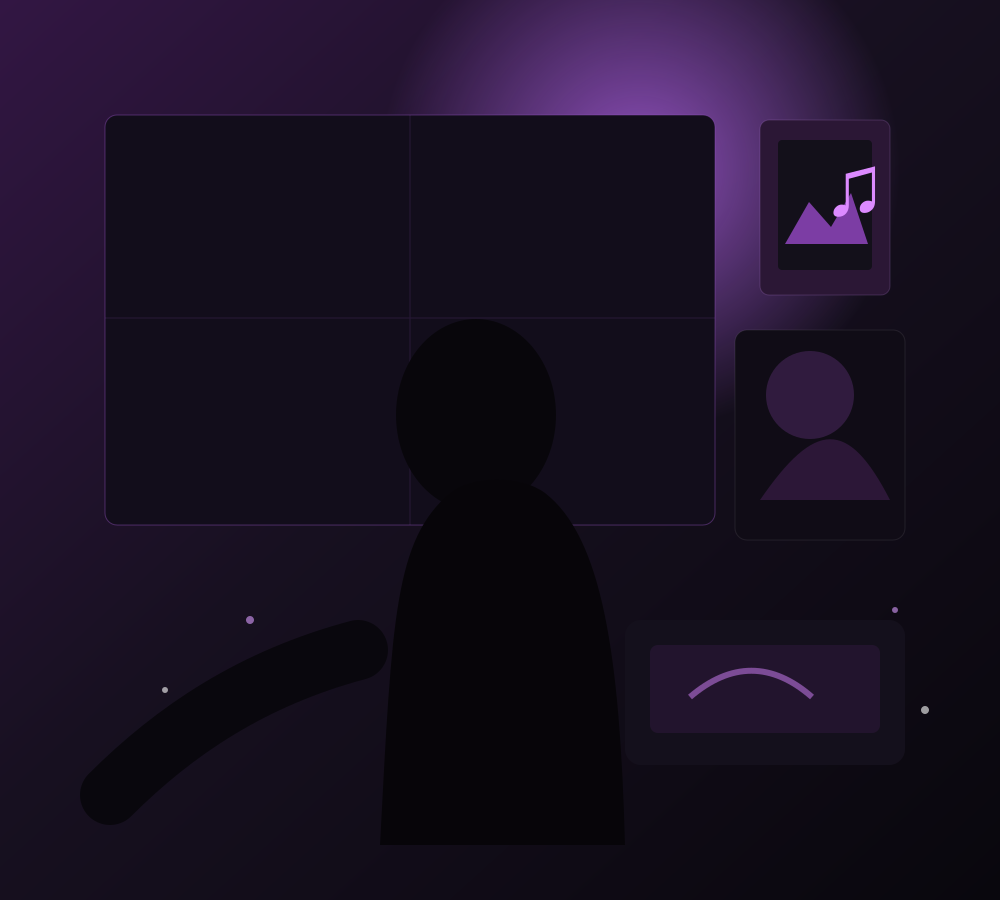

Suspiro
Suspiro✦
cultura, afeto e comunidadeA rede social feita para quem ama cultura e conexões reais.
Compartilhe o que você ouve, lê, joga, assiste e sente. Descubra pessoas com gostos parecidos em um ambiente mais leve e humano.

♡
Conexões reaisPessoas com gostos em comum♙
Seus gostosLivros, filmes, músicas e jogos♢
Ambiente seguroControle, denúncia e privacidade✧
Cultura que inspiraDescubra algo novo todos os diasO Suspiro começa pelo que você gosta.
Esta versão já permite testar cadastro local, login, publicações, fotos e vídeos, curtidas, comentários, perfil, favoritos, busca, mensagens, notificações, configurações e denúncias. Depois, esses mesmos fluxos serão conectados ao Supabase.
01
Perfil cultural
Favoritos, bio, publicações e números de conexão em um perfil compacto como o da referência.
02
Feed e dumps
Pensamentos, dumps com fotos ou vídeo, reações, comentários, favoritos e tags de humor funcionando localmente.
03
Explorar e conectar
Busca por pessoas e assuntos, seguir perfis e compatibilidade calculada pelos interesses do usuário.